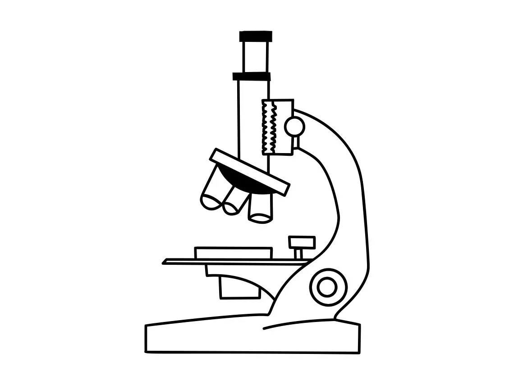
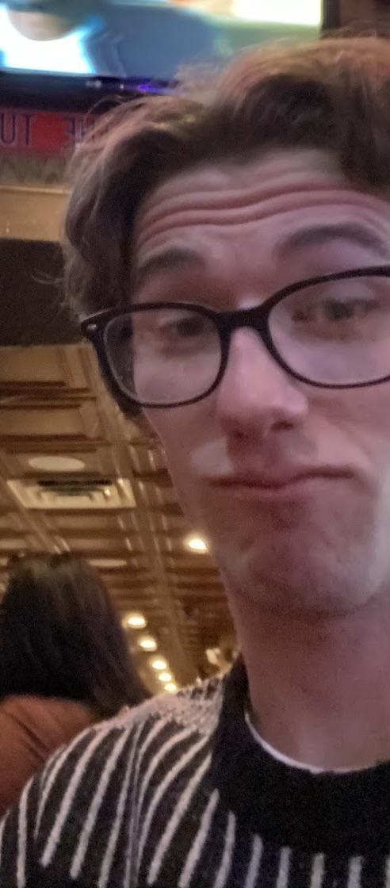

The Catalyst is published once each semester, and is open for the submission of abstracts from any student conducting research related to bioengineering and biotechnology. Sources of student research articles can come from a research experience at faculty-run lab on campus, honors program or thesis, and/or internship. The journal’s main goals are the following: Galvanize interest and spur involvement in undergraduate research for students whom are not currently involved in research. Create a medium for current undergraduate researchers to publish their findings. Develop a more connected community of researchers and students on campus. Allow undergraduate researchers to expand their research experience and influence with The Catalyst’s social impact section and interview sections.
The Catalyst team is also looking for pictures/imaging and videos taken by students during their research work. Pictures and videos will be included as highlights throughout future editions. Every photo and video included will have text with quick information about the research being done and credit to the student, PI, and lab. Please contact us if interested!

Emre Derin
Editor in Cheif
Duy Le
Assistant Editor-in-Chief, Director of Finance
Matthew Ensign
Director of Operations
Anika Dasgupta
Director of Human Resources
Sarah Han
Director of Public Relations

Patrick Scott
Lead Web Developer
Jeffrey Luo
Web Developer and Staff Editor
Chelsea Neumann
Lead Graphic Designer